1. 外星爸爸寻人事件
小格去哪了？
04:39小格去哪了？
04:39
前情提要
02:42本季花絮抢先听
00:56黑雨衣的预告
02:44
新反派上线啦
03:32
赛车失火案
09:16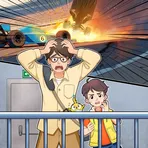
赛车失火案
06:16
科学揭秘：首届无人方程式赛车大赛
02:22
赛车失踪案
07:24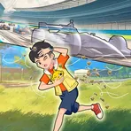
赛车失踪案
08:27科学揭秘：什么是汽车避障系统
02:26芯片被盗追击案
09:42
科学揭秘：什么是AI三要素
03:05熊包包失踪案
07:30
熊包包失踪案
07:22
科学揭秘：什么是外卖机器人
02:33
火龙果被盗案
08:42火龙果被盗案
08:15
科学揭秘：什么是无土栽培
03:15乱七八糟的日常 1
01:09香肠被偷案
05:55
香肠被偷案
08:06
科学揭秘：什么是胡桃醌
02:15
混合现实眼镜被换案
07:51混合现实眼镜被换案
07:14
什么是混合现实眼镜？
02:53
机房数据盗窃案
08:35机房数据盗窃案
06:57
计算机机房里都有什么？
02:55乱七八糟的日常 2
01:01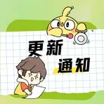
更新时间改啦！
00:53
密室逃脱抓小偷
07:02密室逃脱抓小偷
09:50
科学揭秘：什么是黄金分割律
02:29虚拟直播作案
08:58
虚拟直播作案
07:03
科学揭秘：什么是虚拟直播
02:20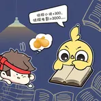
乱七八糟的日常 3
01:20运动员意外案
06:55
运动员意外案
07:12
科学揭秘：什么是鞋钉
02:49乱七八糟的日常 4
00:52公园寻人案
08:00
公园寻人案
08:19
科学揭秘：什么是蝉
02:05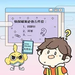
乱七八糟的日常 5
01:02
婚礼钻戒失窃案
08:11婚礼钻戒失窃案
07:07
科学揭秘：什么是膝盖内翻
02:19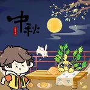
中秋番外
02:58
假发胶水掉包案
07:08假发胶水掉包案
07:20
科学揭秘：什么是水溶性胶水
02:38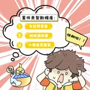
乱七八糟的日常 6
01:22
老头失踪案
07:49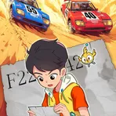
老头失踪案
08:51
科学揭秘：什么是天眼系统
02:12
小孩失踪案
07:10小孩失踪案
08:07
科学揭秘：什么是AI换脸？
02:08乱七八糟的日常 7
02:32仿生果冻电池被盗案
07:50
仿生果冻电池被盗案
07:18
科学揭秘：什么是电池？
02:26国庆番外
02:19电话手表失窃案
08:00
电话手表失窃案
08:26
科学揭秘：什么是SIM卡？
02:08抓捕诈骗犯案
08:31
抓捕诈骗犯案
07:58
科学揭秘：什么是AI声纹模拟？
02:03乱七八糟的日常 8
02:13
鼷鹿丢失案
07:36鼷鹿丢失案
07:34
科学揭秘：什么是高吸水性树脂？
01:57鼷鹿被盗案
07:20
鼷鹿被盗案
06:41
科学揭秘：什么是鼷鹿？
01:54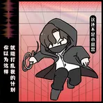
乱七八糟的日常9
02:04
自行车比赛破坏案
08:25自行车比赛破坏案
07:58
科学揭秘：什么是猞猁？
02:21
森林迷路案
09:52森林迷路案
07:47
科学揭秘：什么是拟耧斗菜？
02:08乱七八糟的日常10
01:14
限量款玩偶被盗案
07:55限量款玩偶被盗案
06:54
科学揭秘：什么是材料的低温脆性？
02:20
剧组破坏案
09:02剧组破坏案
07:32
科学揭秘：什么是动作捕捉技术？
02:45乱七八糟的日常11
01:34
保护文物案
08:27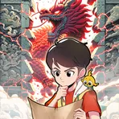
保护文物案
09:30
科学揭秘：什么是龙泉印泥？
02:44
神秘求救案
07:17神秘求救案
07:04
科学揭秘：什么是栅栏密码？
02:18乱七八糟的日常12
01:00白教授离奇失踪案
09:53
白教授离奇失踪案
07:32
科学揭秘：什么是按键音？
02:15
纳米机器人被盗案
06:55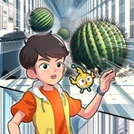
纳米机器人被盗案
07:57
科学揭秘：什么是纳米机器人？
02:22纳米机器人被盗案
07:50
纳米机器人被盗案
07:22
科学揭秘：什么是过冷水？
02:27乱七八糟的日常13
01:16怪兽出没案
07:00
怪兽出没案
07:51
科学揭秘：什么是音响？
02:45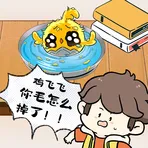
乱七八糟的日常14
01:15雪具破坏案
07:53
雪具破坏案
06:24
科学揭秘：什么是人工降雪？
02:42雪具破坏案
07:00
雪具破坏案
06:54
科学揭秘：什么是鸽血红宝石？
02:18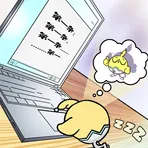
乱七八糟的日常15
01:57
名画盗窃案
06:40名画盗窃案
06:48
科学揭秘：什么是橡胶？
02:19乱七八糟的日常16
01:48
鸡飞飞失踪案
07:18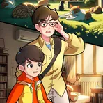
鸡飞飞失踪案
07:38
什么是猫薄荷？
02:28
雪人袭击案
08:54雪人袭击案
06:41
什么是智能温泉控制系统？
02:02
雪人连环袭击案
07:47雪人连环袭击案
07:23
什么是地层？
02:14乱七八糟的日常17
01:18
吉他琴弦破坏案
07:09吉他琴弦破坏案
08:04
什么是二氧化氯？
02:08侦探对决案
07:39
侦探对决案
09:54
什么是太阳系？
02:24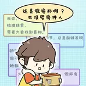
乱七八糟的日常18
02:19鹦鹉杯被盗案
07:25
鹦鹉杯被盗案
08:19
什么是鹦鹉螺？
02:04
永王遇袭案
07:48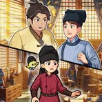
永王遇袭案
08:08
什么是雌黄？
02:23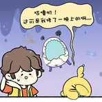
乱七八糟的日常19
01:14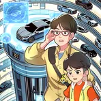
服务区盗窃案
08:12
服务区盗窃案
07:07
什么是智能立体停车系统？
02:16纳米机器人2次被盗案
07:19
纳米机器人2次被盗案
08:40
什么是智能家居？
02:08乱七八糟的日常20
01:32口袋神探来新歌了！
02:11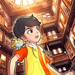
冒牌鸡飞飞身份曝光
09:29
冒牌鸡飞飞身份曝光
08:11
什么是国际象棋？
02:20追踪冒牌鸡飞飞
07:56
追踪冒牌鸡飞飞
07:20
什么是二十八星宿？
02:12
大结局上
08:38大结局上
07:00
什么是脑机接口？
02:34
大结局中
08:14大结局中
08:13
什么是外置骨骼？
02:24
大结局下
08:56大结局下
08:16
什么是量子计算机？
02:13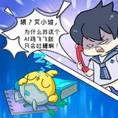
当霍晓迪有了ai鸡飞飞
01:25